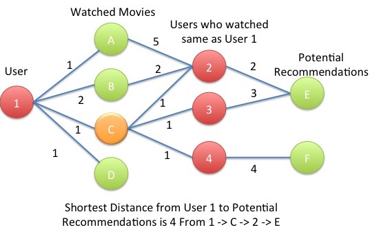
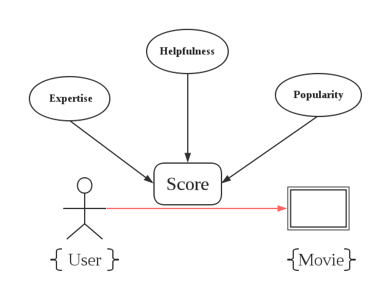
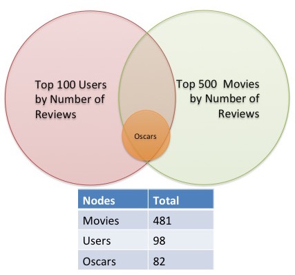
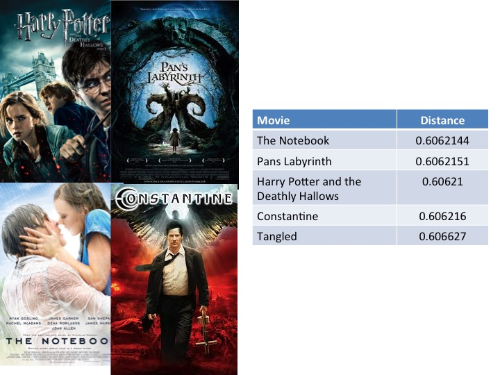
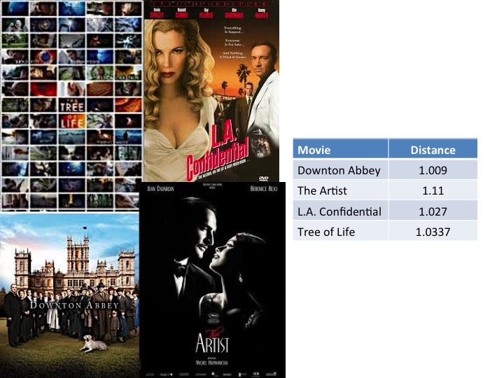
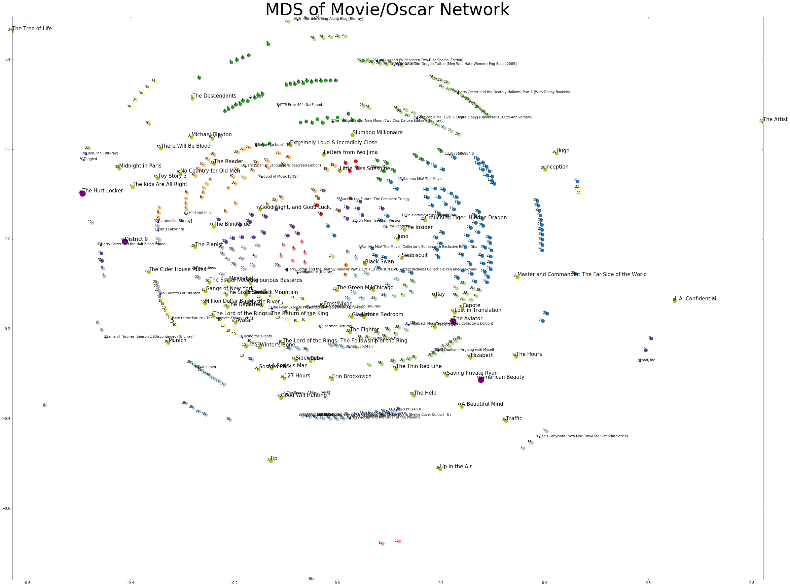
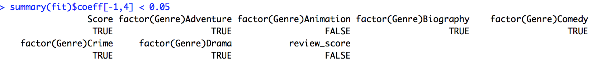
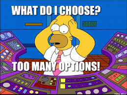
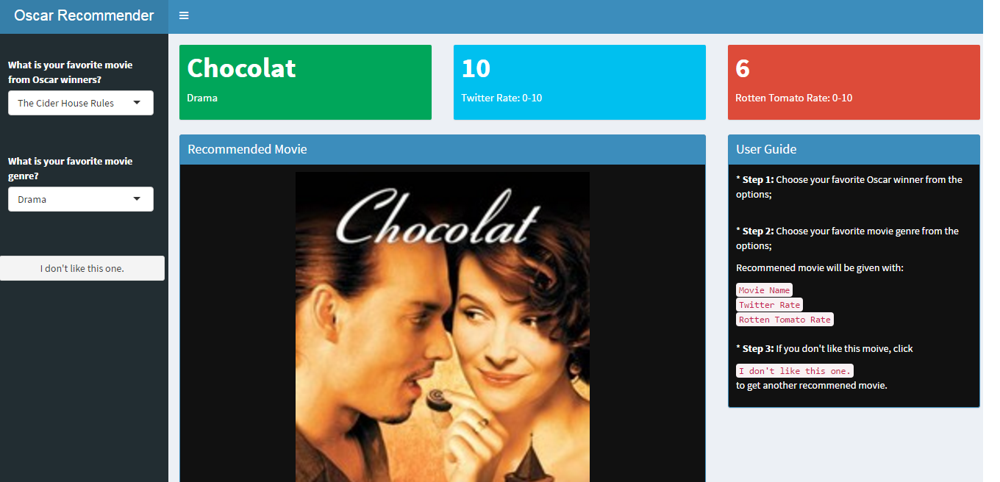
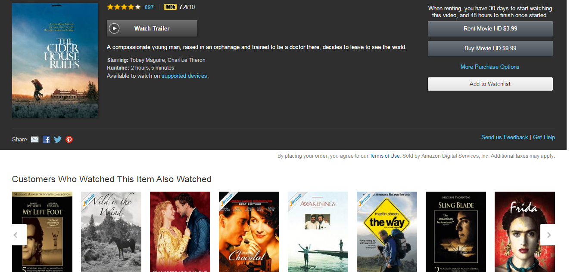

Welcome to the 89th Academy Awards!
Using Amazon Movie Reviews to Analyze Oscar Nominations for Best Picture
Bob Minnich, Ziyue Jin, Rong Wang, Aoyuan Liao, Josh Dillon
April 13, 2016

Overview
For our project we wanted to explore the Amazon Movies data set with a focus on the Oscars. We thought that this would be an interesting area to explore and try to determine if we can find any subpopulations of the movies by using graph theory as our distance metric. Using a netowork allows us to create distance matrices that can allow analysis for clustering and recommendations. We also wanted to determine if we could predict the winner of Best Picture based on the Amazon dataset.
Movie Graph Theory
Graph theory was used in order to determine distances between Users, Movies and Oscars. Graph theory offers a nice way to try and relationships between users and movies. Below is an example of how to use graph theory using Amazon reviews:
From this graph we now have a metric that we can use between all pairwise nodes within a graph. For instance we can now find similar users within a graph, by closest distance and similar movies within the same way.
Distance Adjustment and Calculation
In order to improve our network, we want to define the distance by the review scores. The bigger the review score, the closer the user and the movie are. However, does all the reviews are reliable? How do we measure the credibility of each review?

movies.summary<-filter(movies.raw,review_h<=1)%>%
mutate(reviewUAvg=(review_score*user.count+3*3)/(user.count+3),
reviewHAvg=review_score*review_h+(1-review_h)*3,
reviewPAvg=(review_score*prod.count+3*6)/(prod.count+6))We modified the score by the Bayesian method and obtained 3 scores, each of which took one of the above three aspects into account,respectively. For example, we adjusted the score for users with more review experince (experts).
Then, we weighted these 3 scores equally and got the overall score which the distance depends on.
Subesetting the Amazon Review Database
In order to focus on a specific area of the Amazon Movie Review dataset we decided to focus on the most popular populations of the Users (Top 100 Reviewers - Number of Reviews), Movies (Top 500 Movies Reviewed - Number of Reviews)

Movies Seen by a Reviewer
As an example of our graph what we will do is choose the user with the smallest number of reviewed movies. In this case on of the top reviewers had reviewed only 4 of the 498 movies within our dataset.
This user had seen the following movies:
Recommended Movies Based on Network Distance
From our network we can look up a user, and find the distances between that user, and all other nodes. By filtering out the user nodes, and looking at the closest movies we get the following reccomendations for our user.

Farther Movies from User Based on Network Distance
We can also look at the movies that are farthest away from our user or the movies that we would least likely suggest.

Network Visualization
Having pairwise distances avialable between all users, MDS or Multidimensional Scaling, is a good cnadidate to try and understand potential clustering between groups and try to visualize the complex graph on a 2D plane.
The scatter plot below was created using MDS with 2 components. After this distance matrix was created, K-Means Clustering was performed with a Gaussian Mixture Model using 40 components to try and identify sub populations within the data.
We can see from the plot below that there are many groupings within the MDS transformation. After further investigation there are many duplicates that appear in our data including the many different versions of medium for viewing a movie. This makes sense that they woud close to eachother because in the Amazon Movie review database, almost all of them have the same reviews from the same reviewers.
Points that are larger, and in gold are Oscar movies, with other movies that are colored by their grouping that was produced using the Gaussian Mixture Model. Labels of each point has it’s group number and a title if available.
Points that are larger in purple, are the movies that our user mentioned previously has viewed and the larger points in light blue, are the recommended movies. It might not be as insightful on suggesting reviews, becasue the dimension has been reduced but we can see that Up is very close to Disctrict 9 and the Aviator that our user has already viewed. It does become apparent that the movies that are the farthest from our user are some of the farthest within the plot below

D3 Visualization
D3 was used to visualize what our network looks like in an interactive form. In Blue we have our user that was mentioned previously in the report. In Purple, we have the movies that our user has seen.
In gold we have the oscar movies, Large Dark Gold are the movies that only one user has seen and each red node represents a user. Note that all other, non-oscar movies were removed to provide clairty. The black node is the user in the network with the most number of movies reviewed.
Interaction: You can click and drag nodes around to see affects on network and they will stay in place. Also hovering over an node will allow you to see the number of neighbors that it has.Logistic Regression Model to Predict Oscar Winners
As part of our analysis, we were curious if it would be possible to predict the winner of Best Picture based on information gathered through Amazon movie reviews. We began by joining the Amazon data with our Oscars data, which included variables such as whether or not they won Best Picture, and what year they were nominated in. After, we also joined the data with movie scores given by Twitter. Then we split into training and testing data.
This predictive model is most likely biased as we had to use reviews posted before and after the Oscar nomination and ceremony dates to have a large enough sample size.
#################### Load Libraries ##################
library(dplyr)
library(data.table)
library(caret)
#################### Prepare Data ####################
movies <- read.csv("movies2.csv", stringsAsFactors=FALSE)
oscar_asin <- read.csv("project4-team-5/data/oscar_nominations.csv", stringsAsFactors=FALSE)
oscar_dates <- read.csv("project4-team-5/data/oscar_dates.csv", stringsAsFactors=FALSE)
twitter_data <- read.csv("project4-team-5/data/oscar_winners_FINAL_twitter2.csv", stringsAsFactors=FALSE)
twitter_data[14,]$Title = "Crouching Tiger, Hidden Dragon"
twitter_data$Year<-NULL
twitter_data$Win<-NULL
twitter_data$ASIN<-NULL
twitter_data<-twitter_data[1:98,]
# Take first genre
for(i in 1:length(twitter_data$Genre)){
twitter_data$Genre[i]<-strsplit(twitter_data$Genre[i], "|", fixed=TRUE)[[1]][1]
}
oscar_movies <- left_join(oscar_asin, movies, by = c("ASIN" = "product_productid"))
final_data <- subset(left_join(oscar_movies, twitter_data, by = c("Title" = "Title")), select=c(3,8,15,16))
# Split into training and testing data
train<-sample_frac(final_data, 0.7)
sid<-as.numeric(rownames(train))
test<-final_data[-sid,]Creating the logistic regression model was fairly easy. We chose to go with this model as it works well with categorical data, in our case, whether or not a movie wins Best Picture after being nominated.
# Fit logistic regression model
fit <- glm(Win~Score+factor(Genre)+review_score,data=train,family=binomial(link='logit'))
fit.result <- predict(fit, test)
fit.result <- ifelse(fit.result > 0.5,1,0)
error <- mean(fit.result != test$Win)
# Percent correctly classified
print(paste0('Percent classified correctly ', (1-error) * 100, "%"))
summary(fit)
# Statistically significant variables
summary(fit)$coeff[-1,4] < 0.05Our model fits very well, with an average of 81% accuracy in correctly choosing which nominated movies would win Best Picture. In addition, we analyzed the variables within the model to determine statistically significance. Interestingly, the Amazon movie review score was not deemed statistically significant, while the Twitter score and main genre were significant.

Recommendation Engine
Based on the distance matrix we got from the network, we build a recommendation engine for oscar movies.
Imagine this scenario…
You want to watch a good movie but have no idea what to see.
You want to watch an Oscar movie but there are so many movies that have won the Oscars.
You want a movie with a specific genre but don’t want to waste time on a stinker.


https://crimeradar.shinyapps.io/Recsys/
How do we recommend?
Pretty simple!
Choose the closest one to your favorite Oscar movie among Oscar nominations with the genre you want to try.
We will recommend a movie you may like.
How does it work?
Recommend a movie of certain type, which has the smallest distance with the movie chosen by users.
This is our recommendation:

How about the recommendation from Amazon?

Conclusion
Throughout the project mulitple avenues were explored within the Oscar Movies to try and understand the relationships between the top movies, the oscars and the top reviewers within the Amazon dataset. This was explored using clustering, network modeling and logisitc regression to attempt to predict the oscars. We found multiple clustering of movies, mostly related to replicated within the Amazon dataset, and also built a movie reccommendation application based on which oscar movies that you prefer. Logistic regression also shown that the Amazon movie review score was not deemed statistically significant, while the Twitter score and main genre were significant. This is an interesting finding possibly suggesting that more prominant movie reviewers are using twitter to review movies and the professional reviews on Amazon are drowned out by the average reviewers.